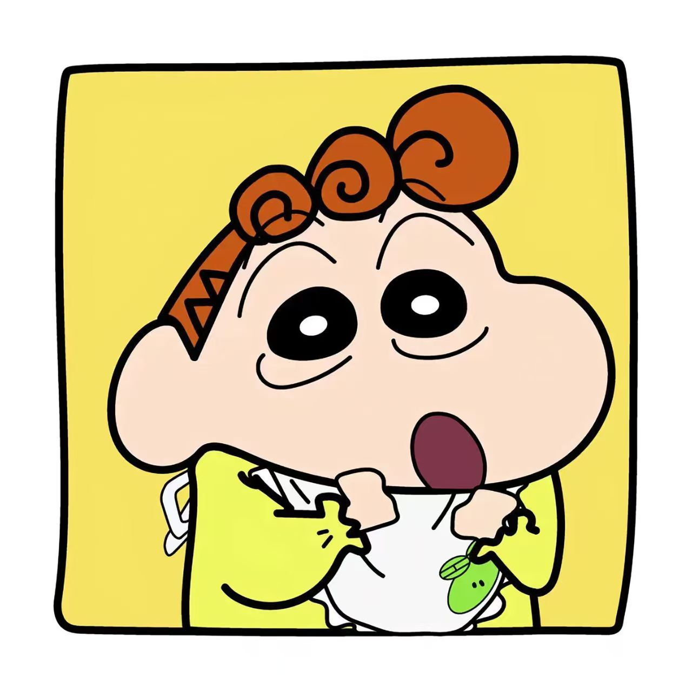
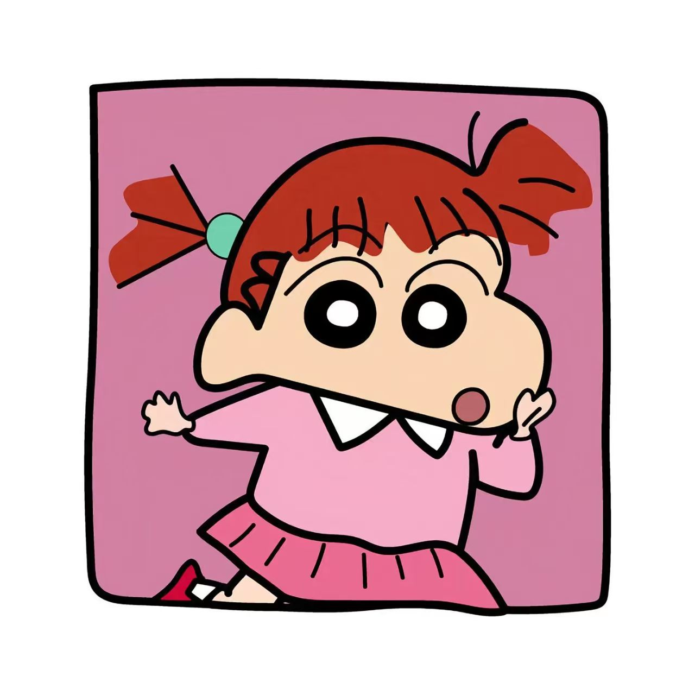

人物介绍
野原新之助
野原新之助是《蜡笔小新》的主角，年仅五岁，就读双叶幼稚园向日葵小班。他外表天真可爱，性格却调皮大胆、思维跳脱，言行常常超乎常人，时常闹出无厘头的笑话。小新不爱按常理做事，喜欢模仿大人说话、搭讪漂亮姐姐、跳搞怪舞蹈，常常惹得妈妈生气，让家人哭笑不得。看似贪玩捣蛋、不爱规矩，实际上小新心思细腻、善良温柔，拥有纯粹又温暖的内心。他非常疼爱妹妹小葵，爱护小白，关心爸爸妈妈，在家人和朋友遇到困难时，总能用最童真、最真诚的方式挺身而出。小新虽然成绩普通、调皮任性，却拥有最真实、最自由的性格，不被世俗规则束缚。他乐观开朗、无忧无虑，懂得享受生活里的小快乐，常常在平凡日常中制造温暖和感动。小新用天真治愈观众，也让大家看到最简单纯粹的美好，是整部作品最温暖、最亮眼的灵魂角色。
野原广志
野原广志是野原家的父亲，三十五岁的普通上班族，是家庭的主要经济支柱。他性格温和稳重、踏实顾家，每天早起通勤上班，辛苦工作养家，承担着成年人的压力与责任。广志外形普通、生活平淡，有着标志性的脚臭小缺点，偶尔偷懒、爱喝酒、爱看美女，拥有普通人的小缺点，真实又接地气。他脾气温和，包容心强，很少对孩子发火，总是温柔耐心地陪伴家人。虽然收入普通、生活平凡，没有大富大贵，却一直踏实努力、认真生活，尽自己所能给家人安稳幸福的生活。广志疼爱妻子、宠爱孩子，珍惜平凡的家庭日常，懂得体谅美伢的辛苦，陪伴小新和小葵成长。他偶尔会自卑、会疲惫，却从未放弃家庭责任，默默扛下生活压力。广志是最真实的普通父亲形象，平凡普通却可靠踏实，用一生的坚守与陪伴撑起温暖的家。

野原小葵
野原向日葵是野原家的小女儿，小新的妹妹，年纪尚小、天真懵懂，是家里最小、最受宠的成员。小葵外形可爱软萌，性格机灵调皮、古灵精怪，从小就非常有个性。她喜欢帅哥、喜欢亮晶晶的饰品、爱漂亮、爱撒娇，情绪直接，开心就笑、不开心就闹。日常里，小葵经常和哥哥小新抢玩具、抢零食、争宠爱，偶尔故意捣乱、惹出小麻烦，活泼又调皮。虽然年纪幼小、不懂世事，却十分聪明敏感，很会观察家人情绪，懂得撒娇讨喜，深受爸爸妈妈和哥哥疼爱。小葵看似任性爱玩，其实非常依赖家人，黏着爸爸妈妈，也信任哥哥小新。她的到来让野原家更加热闹温馨，为平淡的家庭日常增添无数欢乐与生机。小葵天真烂漫、无忧无虑，是家里的小开心果，也是全家人最柔软的牵挂，用稚嫩可爱的模样治愈整个家庭。
小白
小白是野原家养的小狗，通体雪白、模样软萌可爱，性格温顺乖巧、懂事善良，是整部动画最治愈的动物角色。小白看似只是一只普通小狗，却拥有远超普通宠物的智商与灵性，听得懂人类语言，能理解家人情绪，会帮忙看家、收拾东西、照顾小葵。它性格温柔柔软、从不暴躁，包容调皮的小新，无论小新怎么折腾、玩耍、使唤它，小白都不离不弃、温柔陪伴。日常安静乖巧、温顺可爱，平时慵懒呆萌、爱睡觉、爱晒太阳，天真治愈。但在危险来临、家人遇到麻烦时，小白会变得勇敢坚定，挺身而出保护主人，忠诚又可靠。小白见证野原家所有日常，陪伴小新长大，参与家里每一段温馨琐碎的时光。它没有复杂心思，只有纯粹的忠诚与温柔，默默陪伴、默默守护，是野原家不可或缺的家人，也是观众心中最温柔治愈的存在。
风间彻
风间彻是小新的同班同学、春日部防卫队核心成员，家境优越、聪明懂事，是班里典型的优等生。他性格自律要强、追求完美，从小立志成为精英，认真学习、注重形象、讲究规矩，做事严谨认真、条理清晰。风间性格傲娇细腻、好面子，非常在意别人看法，有很多小秘密和小坚持。他最无奈的事情就是总被调皮随性的小新打乱计划、扰乱节奏，经常被小新气得无奈抓狂，表面嫌弃小新胡闹幼稚。但内心深处，风间非常珍惜和小新的友情，嘴上吐槽，心里却无比信任、依赖小新。他看似成熟理智、高冷自律，内心其实只是个普通小孩，偶尔也会脆弱、迷茫、贪玩。在五位小伙伴中，风间最懂事自律、最有上进心，也最温柔重情。他和小新一静一动、一稳一闹，性格互补，是彼此最重要、最珍贵的挚友，也是整部动画最动人的友情代表。

樱田妮妮
樱田妮妮是春日部防卫队唯一的女生，性格活泼强势、元气满满、主见极强，是团队里最主动热情的角色。妮妮性格直率火爆、敢说敢做，非常喜欢主导游戏、安排大家活动，最爱的游戏是超真实扮家家酒，常常主动拉着小伙伴一起参与。她情绪直接、爱闹小脾气，生气时会对着兔子玩偶发泄情绪，任性又可爱。妮妮看似强势霸道、爱主导，其实内心温柔细腻、重视友情，真诚对待每一位伙伴。她乐观开朗、精力充沛，永远充满活力，敢于表达自己想法，从不怯懦退缩。虽然偶尔任性、冲动、爱闹小情绪，但心地善良、真诚纯粹，关键时刻非常团结小伙伴、懂得体谅他人。妮妮敢爱敢恨、直率真实，有着小女孩的天真任性，也有着独属于自己的可爱个性。她活泼亮眼、元气十足，为春日部防卫队增添许多活力与色彩，是活泼又温暖的可爱女孩角色。
佐藤正南
佐藤正男与阿呆是春日部防卫队的核心成员，性格温柔纯粹、各有特点。正男生性温柔善良、性格胆小怯懦、爱哭敏感，缺乏自信，容易自卑害羞，常常被欺负、容易慌乱紧张。他性格软糯温和、待人真诚，没有脾气、非常包容，珍惜每一段友情，十分依赖伙伴。虽然胆小软弱，但正男内心善良柔软，关键时刻愿意鼓起勇气保护朋友，慢慢在成长中变得更加勇敢自信。阿呆性格安静沉稳、沉默内敛，不爱说话，看起来呆呆迟钝，实则心思细腻、头脑冷静、观察力极强。他标志性的长鼻涕从不影响可爱气质，擅长收集各种独特石头，对石头有着极致热爱。遇事时，阿呆永远沉着冷静、不急不躁，常常在关键时刻想出解决办法，是团队最靠谱的智囊。两人一个温柔柔软、一个冷静沉稳，性格低调温柔，看似不起眼，却是春日部防卫队最温暖稳固的存在，用纯粹善良陪伴彼此、温暖观众，是团队不可或缺的重要成员。
阿呆
佐藤正男与阿呆是春日部防卫队的核心成员，性格温柔纯粹、各有特点。正男生性温柔善良、性格胆小怯懦、爱哭敏感，缺乏自信，容易自卑害羞，常常被欺负、容易慌乱紧张。他性格软糯温和、待人真诚，没有脾气、非常包容，珍惜每一段友情，十分依赖伙伴。虽然胆小软弱，但正男内心善良柔软，关键时刻愿意鼓起勇气保护朋友，慢慢在成长中变得更加勇敢自信。阿呆性格安静沉稳、沉默内敛，不爱说话，看起来呆呆迟钝，实则心思细腻、头脑冷静、观察力极强。他标志性的长鼻涕从不影响可爱气质，擅长收集各种独特石头，对石头有着极致热爱。遇事时，阿呆永远沉着冷静、不急不躁，常常在关键时刻想出解决办法，是团队最靠谱的智囊。两人一个温柔柔软、一个冷静沉稳，性格低调温柔，看似不起眼，却是春日部防卫队最温暖稳固的存在，用纯粹善良陪伴彼此、温暖观众，是团队不可或缺的重要成员。